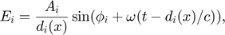
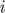
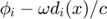

Contents
Test PSO Algorithm Prototype
clear
close all
clc
A simple testing optimization problem
The following can be compared with the built-in particleswarm solver provided by MATLAB. objFcn = @dejong5fcn; nvars = 2; lb = [-64 -64]; ub = [64 64]; [x,fval] = particleswarm(objFcn,nvars,lb,ub)
objFcn = @dejong5fcn;
nvars = 2;
lb = [-64 -64];
ub = [64 64];
[x, fval, exitFlag, output] = PSO_alg(objFcn, nvars, lb, ub, 'iter')
Best Mean Stall
Iteration f-count f(x) f(x) Iterations
0 200 23.81 475.9 0
1 400 1.992 494 0
2 600 1.992 472.7 1
3 800 1.992 480.3 2
4 1000 1.992 467.4 3
5 1200 1.992 491.9 4
6 1400 1.992 470.5 5
7 1600 1.992 482.3 6
8 1800 1.992 465.4 7
9 2000 1.992 454.4 8
10 2200 1.976 420.1 0
11 2400 1.005 397.1 0
12 2600 1.005 362.1 1
13 2800 0.9986 370.9 0
14 3000 0.9986 369.7 1
15 3200 0.998 349.6 0
16 3400 0.998 318.4 0
17 3600 0.998 311.4 0
18 3800 0.998 289.5 0
19 4000 0.998 282.3 0
20 4200 0.998 265 1
21 4400 0.998 256.3 2
22 4600 0.998 239.3 0
23 4800 0.998 215.5 0
24 5000 0.998 214.5 0
25 5200 0.998 212.4 0
26 5400 0.998 213.8 1
27 5600 0.998 221.1 0
28 5800 0.998 224.3 0
29 6000 0.998 212.3 1
30 6200 0.998 224.5 2
Best Mean Stall
Iteration f-count f(x) f(x) Iterations
31 6400 0.998 242.9 3
32 6600 0.998 223.1 0
33 6800 0.998 249.1 1
34 7000 0.998 243.9 2
35 7200 0.998 257.6 3
36 7400 0.998 255 4
PSO:particleswarm:ExitTolFun
x =
-31.9785 -31.9783
fval =
0.9980
exitFlag =
1
output =
struct with fields:
rngstate: [1×1 struct]
iterations: 36
funccount: 7400
message: 'PSO:particleswarm:ExitTolFun'
A more complex testing optimization problem
This example shows how to locate the maximum of an electromagnetic interference pattern. For simplicity of modeling, the pattern arises from monochromatic polarized light spreading out from point sources.
The electric field due to source i measured in the direction of polarization at point x and time t is

where is the phase at time zero for source , is the speed of light, is the frequency of the light, is the amplitude of source , and is the distance from source to .
For a fixed point the intensity of the light is the time average of the square of the net electric field. The net electric field is sum of the electric fields due to all sources. The time average depends only on the sizes and relative phases of the electric fields at . To calculate the net electric field, add up the individual contributions using the phasor method. For phasors, each source contributes a vector. The length of the vector is the amplitude divided by distance from the source, and the angle of the vector,  is the phase at the point.
For this example, we define three point sources with the same frequency () and amplitude (), but varied initial phase (). We arrange these sources on a fixed plane.
% Frequency is proportional to the number of peaks relFreqConst = 2*pi*2.5; amp = 2.2; phase = -[0; 0.54; 2.07]; numSources = 3; height = 3; % All point sources are aligned at [x_i,y_i,z] xcoords = [2.4112 0.2064 1.6787]; ycoords = [0.3957 0.3927 0.9877]; zcoords = height*ones(numSources,1); origins = [xcoords ycoords zcoords];
Visualize the Interference Pattern
Now let's visualize a slice of the interference pattern on the plane z = 0.
As you can see from the plot below, there are many peaks and valleys indicating constructive and destructive interference.
% Pass additional parameters via an anonymous function: waveIntensity_x = @(x) waveIntensity(x,amp,phase, ... relFreqConst,numSources,origins); % Generate the grid [X,Y] = meshgrid(-4:0.035:4,-4:0.035:4); % Compute the intensity over the grid Z = arrayfun(@(x,y) waveIntensity_x([x y]),X,Y); % Plot the surface and the contours figure surf(X,Y,Z,'EdgeColor','none') xlabel('x') ylabel('y') zlabel('intensity')
Posing the Optimization Problem
We are interested in the location where this wave intensity reaches its highest peak.
The wave intensity () falls off as we move away from the source proportional to . Therefore, let's restrict the space of viable solutions by adding constraints to the problem.
If we limit the exposure of the sources with an aperture, then we can expect the maximum to lie in the intersection of the projection of the apertures onto our observation plane. We model the effect of an aperture by restricting the search to a circular region centered at each source.
We also restrict the solution space by adding bounds to the problem. Although these bounds may be redundant (given the nonlinear constraints), they are useful since they restrict the range in which start points are generated.
Now our problem has become:
subject to
where and are the coordinates and aperture radius of the point source, respectively. Each source is given an aperture with radius 3. The given bounds encompass the feasible region.
The objective () and nonlinear constraint functions are defined in separate MATLAB® files, waveIntensity.m and apertureConstraint.m, respectively, which are listed at the end of this example.
Visualization the objective function
Now let's visualize the contours of our interference pattern with the nonlinear constraint boundaries superimposed. The feasible region is the interior of the intersection of the three circles (yellow, green, and blue). The bounds on the variables are indicated by the dashed-line box.
% Visualize the contours of our interference surface domain = [-3 5.5 -4 5]; figure; ezcontour(@(X,Y) arrayfun(@(x,y) waveIntensity_x([x y]),X,Y),domain,150); hold on title('Pattern Contours of The Interference Surface')
Setting Up and Solving the Problem with a Local Solver
Given the nonlinear constraints, we need a constrained nonlinear solver, namely, fmincon.
Let's set up a problem structure describing our optimization problem. We want to maximize the intensity function, so we negate the values returned form waveIntensity. Let's choose an arbitrary start point that happens to be near the feasible region.
For this small problem, we'll use fmincon's SQP algorithm.
% Pass additional parameters via an anonymous function: apertureConstraint_x = @(x) apertureConstraint(x,xcoords,ycoords); % Set up fmincon's options x0 = [3 -1]; opts = optimoptions('fmincon','Algorithm','sqp'); problem = createOptimProblem('fmincon','objective', ... @(x) -waveIntensity_x(x),'x0',x0,'lb',lb,'ub',ub, ... 'nonlcon',apertureConstraint_x,'options',opts); % Call fmincon [xlocal,fvallocal] = fmincon(problem)
Local minimum found that satisfies the constraints. Optimization completed because the objective function is non-decreasing in feasible directions, to within the default value of the optimality tolerance, and constraints are satisfied to within the default value of the constraint tolerance. xlocal = -0.0331 1.3837 fvallocal = -3.4975
Now, let's see how we did by showing the result of fmincon in our contour plot. Notice that fmincon did not reach the global maximum, which is also annotated on the plot. Note that we'll only plot the bound that was active at the solution.
[~,maxIdx] = max(Z(:)); xmax = [X(maxIdx),Y(maxIdx)]; figure contour(X,Y,Z) hold on % Show bounds line([lb(1) lb(1)],[lb(2) ub(2)],'LineStyle','--') % Plot PSO results using a circle marker P1 = scatter(xlocal(1), xlocal(2), 's', ... 'MarkerFaceColor', 'b', 'MarkerEdgeColor',[0 0 1],'LineWidth',1.1); % Create textarrow showing the location of xglobal annotation('textarrow',[0.44 0.50],[0.63 0.58],'TextEdgeColor',[0 0 0],... 'TextBackgroundColor',[1 1 1],'FontSize',12,'String',{'Global Max'}); legend(P1, 'MATLAB:fmincon()', 'Location', 'best'); axis([-1 3.75 -3 3])
Using PSO algorithm
Given an arbitrary initial guess, fmincon gets stuck at a nearby local maximum. Finding tight bounds can be difficult to do in practice, when not much is known about the objective function or constraints. In general though, we may be able to guess a reasonable region in which we would like to restrict the set of start points.
rng(4,'twister') % for reproducibility % Run GlobalSearch nvars = 2; lb = -5*ones(2,1); ub = 5*ones(2,1); objFcn = @(x) -waveIntensity_x(x); tic; [x, fval, exitFlag, output] = PSO_alg(objFcn, nvars, lb, ub, 'iter') toc
Best Mean Stall
Iteration f-count f(x) f(x) Iterations
0 200 -3.855 -0.7119 0
1 400 -4.196 -0.4869 0
2 600 -4.196 -0.7058 1
3 800 -4.196 -0.7684 2
4 1000 -4.196 -0.6578 3
5 1200 -4.196 -0.6571 4
6 1400 -4.196 -0.6861 5
7 1600 -4.257 -0.7249 0
8 1800 -4.257 -0.6303 1
9 2000 -4.257 -0.7115 2
10 2200 -4.257 -0.7712 3
11 2400 -4.257 -0.8945 4
12 2600 -4.257 -1.247 5
13 2800 -4.317 -1.289 0
14 3000 -4.359 -1.794 0
15 3200 -4.37 -2.065 0
16 3400 -4.37 -2.398 0
17 3600 -4.37 -2.627 1
18 3800 -4.37 -2.82 0
19 4000 -4.37 -2.946 1
20 4200 -4.37 -2.997 0
21 4400 -4.37 -3.077 1
22 4600 -4.37 -3.261 0
23 4800 -4.37 -3.333 0
24 5000 -4.37 -3.384 0
25 5200 -4.37 -3.488 0
26 5400 -4.37 -3.482 0
27 5600 -4.37 -3.601 1
28 5800 -4.37 -3.586 0
29 6000 -4.37 -3.564 0
30 6200 -4.37 -3.595 0
Best Mean Stall
Iteration f-count f(x) f(x) Iterations
31 6400 -4.37 -3.657 0
32 6600 -4.37 -3.601 1
33 6800 -4.37 -3.522 0
34 7000 -4.37 -3.533 1
35 7200 -4.37 -3.577 0
36 7400 -4.37 -3.505 1
37 7600 -4.37 -3.537 2
PSO:particleswarm:ExitTolFun
x =
1.2592 0.4284
fval =
-4.3702
exitFlag =
1
output =
struct with fields:
rngstate: [1×1 struct]
iterations: 37
funccount: 7600
message: 'PSO:particleswarm:ExitTolFun'
Elapsed time is 0.258475 seconds.
Examining Results
Show the contours
figure contour(X,Y,Z); hold on % Create textarrow showing the location of xglobal annotation('textarrow',[0.44 0.50],[0.63 0.58],'TextEdgeColor',[0 0 0],... 'TextBackgroundColor',[1 1 1],'FontSize',12,'String',{'Global Max'}); axis([-1 3.75 -3 3]); % Plot PSO and fmincon results using a circle marker P1 = scatter(x(1), x(2), 'o', ... 'MarkerFaceColor', 'r', 'MarkerEdgeColor',[1 0 0],'LineWidth',1.25); P2 = scatter(xlocal(1), xlocal(2), 's', ... 'MarkerFaceColor', 'b', 'MarkerEdgeColor',[0 0 1],'LineWidth',1.25); legend([P1, P2],{'PSO', 'MATLAB:fmincon()'}, 'Location','best'); title('PSO Performance with Relaxed Bounds');